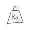
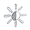
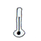
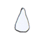
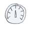
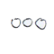

Suivez vos ruches en direct depuis votre smartphone. Economisez votre temps et vos déplacements. Gagnez en sérénité !
D’une installation facile et rapide, le système se positionne sous n’importe quelle ruche et délivre en temps réel un suivi précis des grandeurs mesurées, via des vues graphiques sur notre site internet. En cas de besoin d’intervention, des alertes par sms sont émises.

Masse
Evaluation de la santé de la colonie et de l’avancée de la production de miel.

Eclairement
la mesure de l'éclairement évalue la période de pollinisation des abeilles dans la journée

Température
Suivi de l’état de la ruche (ouverture possible, ajout d’un abreuvoir nécessaire...)

Humidité
Suivi de l’état de la ruche (ouverture possible, ajout d’un abreuvoir nécessaire...)

Pression atmosphérique
Prévision des changements météo influençant le comportement des abeilles.

Autres fonctionnalités
Le tableau de bord intègre également un état des capteurs et de la batterie.